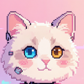

Pixel layout copied from kitty_ui_widgets.cpp: 360 circle, light Swiss, title, two chat lines, chips, pixel-cat still, 图库 card + 56px violet mic. Mascot PNG is the same LittleFS asset the watch will load.
kitty_ui_widgets.cpp
